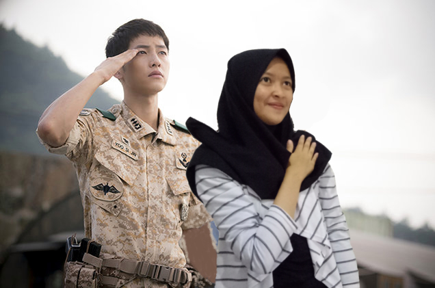
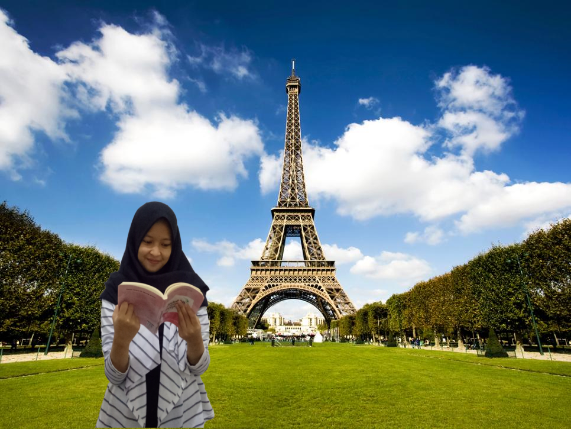
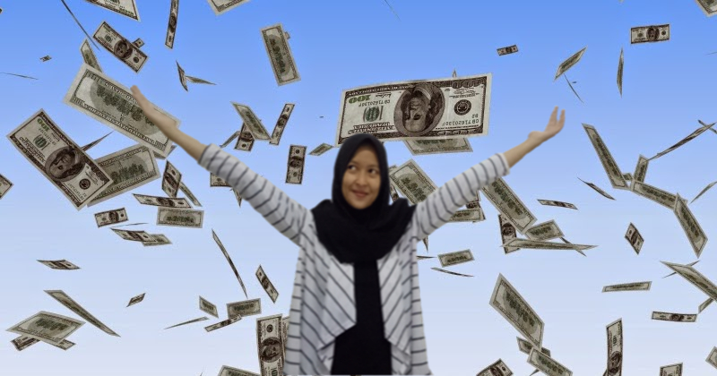

Nama : Rifa Fikriyyah Hazimah
Tempat,Tanggal lahir : Bogor, 18 april 2001
Alamat : Jl. Pasar Baru, Cigombong RT 11/03 No.7
Cita cita : Untuk spesifiknya belum tahu, hehe... yang pasti pengen membahagiakan orang tua, menjadi pribadi yang berguna, dan sukses dunia akhirat. Amiin...
1. Menonton TV
Hobby pertama saya yaitu menonton film. Biasanya saya menonton film ketika ada waktu senggang dan sedang bosan. Waktu dulu saya sering menonton TV, tapi semenjak bersekolah di SMAKBO, sekarang saya jarang sekali menonton TV. Bukan karena apa, tapi memang saat ini saya tinggal di kostan seorang diri dan di kostan saya TIDAK terdapat TV, itulah mengapa saat ini saya tidak tahu apa saja acara yang sedang tren di TV. Dan mulai sekarang, saya lebih suka untuk menonton film, terutama DRAMA KOREA, saya sangat suka sekali menonton Kdrama. Pada awalnya saya tidak suka menonton Kdrama, tetapi setelah dipaksa menonton oleh kakak saya, akhirnya pun saya menyukainya. Drama Korea yang sudah saya tonton yaitu Descendants of The Sun, Emergency Couple, Oh My Venus, Moon Lovers, Goblin, Uncontrollably Fond, I Am Not a Robot, Oh My Ghost, Black Night, Cinderella and The Four Knights, W:Two Worlds, dan yang lain.
2. Membaca Buku
Hobby kedua saya yaitu membaca buku. Hampir setiap hari saya membaca buku, itu karena setiap hari saya memiliki PR atau tugas, yang mau tidak mau mengharuskan saya membacanya. Tetapi saya tidak menyukainya, yang saya sukai yaitu membaca buku NOVEL ataupun KOMIK. Waktu dulu, saya sering dibelikan novel oleh ibu saya, sampai di rumah pun sudah menumpuk, tapi itu semua cerita tentang anak-anak, sekarang saya sudah tidak tertarik untuk membacanya. Oleh karena itu, sekarang saya lebih memilih untuk membaca novel di internet. Biasanya saya membaca novel di Wattpad dan membaca komik di Webtoon. Adapun genre yang saya baca yaitu kebanyakan romance, dan fiction. Saya paling tidak suka membaca cerita yang bergenre horror ataupun thriller, menurut saya lebih baik menonton dalam bentuk filmnya saja daripada membaca ceritanya. Yang paling saya sukai ketika membaca novel bergenre romance yaitu saya suka membayangkan di dalam pikiran saya jika saya menjadi tokoh utama di dalam novel tersebut, kadang-kadang saya sampai senyum-senyum sendiri.
3. Bermain Handphone
Hobby saya yang selanjutnya adalah bermain handphone. Hobby ini paling sering saya lakukan, karena dengan handphone kita akan mudah dalam melakukan sesuatu. Biasanya saya bermain handphone untuk hanya sekedar bermain instagram, bermain game, googling untuk mengerjakan tugas, membaca berita, sampai membaca webtoon dan wattpad. Selain itu, dengan adanya handphone kita bisa berkomunikasi dengan mudah. Karena saya tinggal di kostan yang jauh dari orang tua, maka handphone ini sangat berguna untuk saya. Hal yang paling sering saya lakukan di handphone yaitu mendengarkan musik. Biasanya saya mendengarkan musik ketika mengerjakan tugas dan membereskan kamar kostan saya. Dengan adanya musik, saya merasa hal yang saya lakukan menjadi ringan..
Pada hari Rabu, tanggal 18 April 2001 di Kota Bogor saya dilahirkan. Kedua orang tua saya memberi nama saya Rifa Fikriyyah Hazimah yang berarti wanita yang memiliki keteguhan hati dan pemikiran yang baik, serta mampu bertahan dalam segala hal. Saya merupakan anak ke 2 dari 4 bersaudara. Kakak saya sekarang sedang menyelesaikan kuliahnya. Sedangkan adik pertama saya baru bersekolah di sekolah menengah pertama (SMP) dan adik kedua saya masih bersekolah di sekolah dasar (SD). Rumah saya bertempat tinggal di Jl. Pasar Baru, Cigombong RT11/03 No.7. Karena sekarang saya bersekolah di SMAKBO yang berjarak lumayan jauh dari rumah saya, maka sekarang saya tinggal di kostan Wisma Inkania, Gang Toyib, Ciheuleut. Sebenarnya jarak dari SMAKBO ke rumah saya tidak terlalu jauh, perjalanannya hanya memakan waktu 1,5 jam atau bahkan 1 jam bila jalanan tidak macet. Tapi, karena di daerah rumah saya sering macet, maka perjalanan pun bisa sampai menghabiskan waktu 2,5 jam lebih. Itu yang menyebabkan saya memutuskan untuk mengekost.
Pertama kali saya mengetahui SMAKBO dari keluarga saya. Waktu pada saat itu, ibu saya menyarankan untuk melanjutkan sekolah di SMAKBO setelah lulus dari SMP saya dahulu. Awalnya saya tidak menyetujuinya, karena saya mendengar bahwa sistem pelajaran disana padat, dan murid-muridnya yaitu murid pilihan yang tentunya saja pintar semua. Tapi, atas saran dari keluarga dan teman saya, saya pun menyetujui untuk melanjutkan sekolah di SMAKBO. Saya mengikuti jalur prestasi untuk dapat masuk ke SMAKBO. Setelah bersekolah di SMAKBO, kehidupan saya berubah sekali. Pada waktu kelas 10, saya kaget sekali dengan sistem pembelajaran di SMAKBO. Awal-awalnya saya banyak mengeluh, bahkan saya sempat menyesal bersekolah di SMAKBO dan ingin pindah. Tetapi, setelah bisa melewatinya, sekarang di kelas 11 saya sudah bisa menikmati kehidupan di SMAKBO ini. Saya menikmati kehidupan saya sekarang.
Setelah lulus dari SMAKBO ini, saya memiliki banyak keinginan. Yang pertama, saya ingin bekerja terlebih dahulu sekaligus kuliah dengan uang saya sendiri. Setelah menyelesaikan S1 saya, saya ingin bekerja di perusahaan yang memberikan gaji besar. Saya ingin sekali memiliki banyak uang. Karena dengan uang, kita bisa melakukan apa saja. Saya ingin membahagiakan kedua orang tua saya dan yang paling penting saya ingin bahagia dan sukses dunia akhirat. Semoga semua keinginan saya tercapai, amiin...